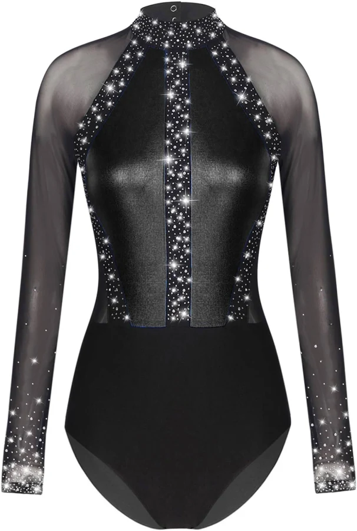
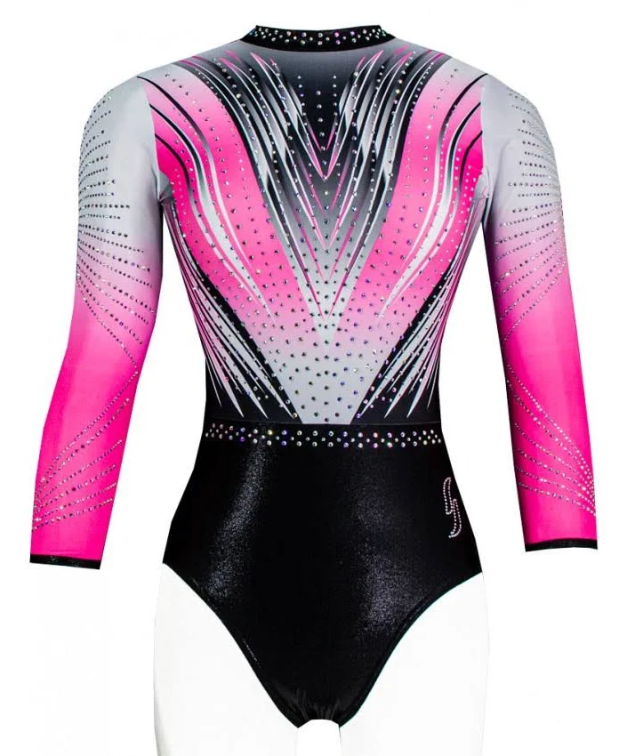

La gymnastique est une activité de production de formes corporelles inhabituelles réalisées dans le but d'être vues et/ou jugées selon un code admis par les pratiquants. Cette activité se caractérise par la recherche du risque de l'originalité et de la virtuosité.
| 12,49€ |  | justecorp noir |
| 95€ |  | justecorp rose |